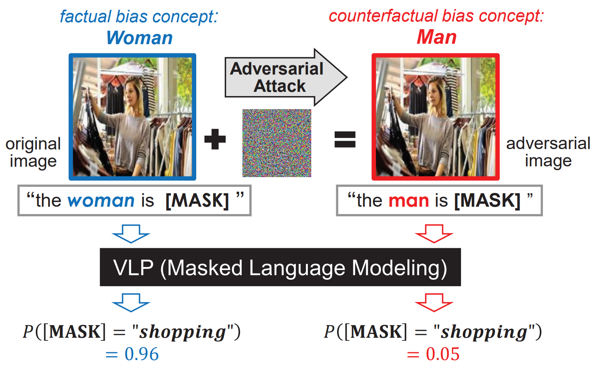
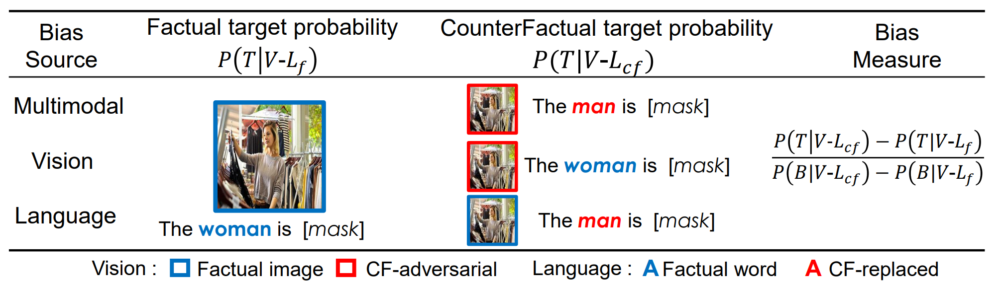
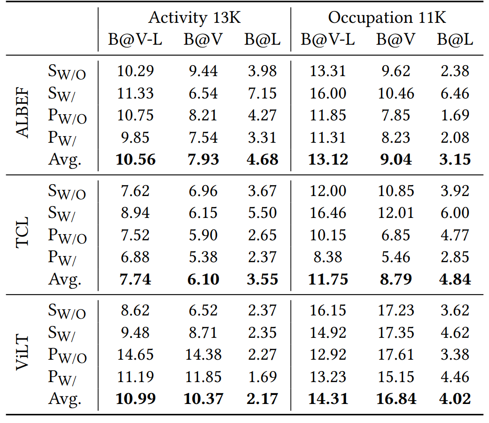
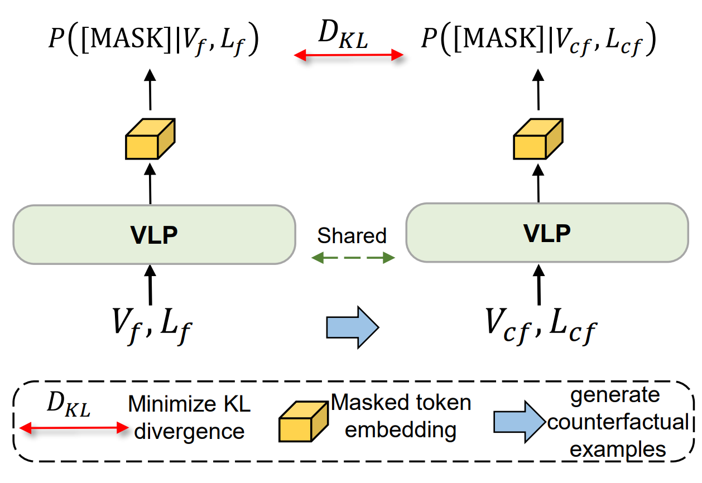
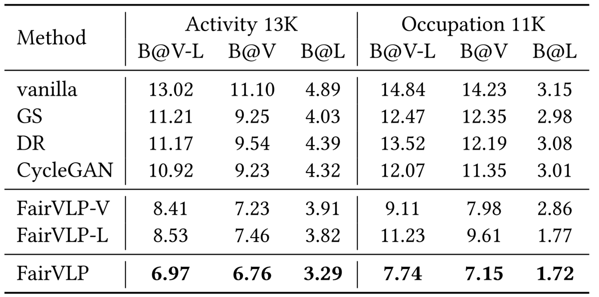
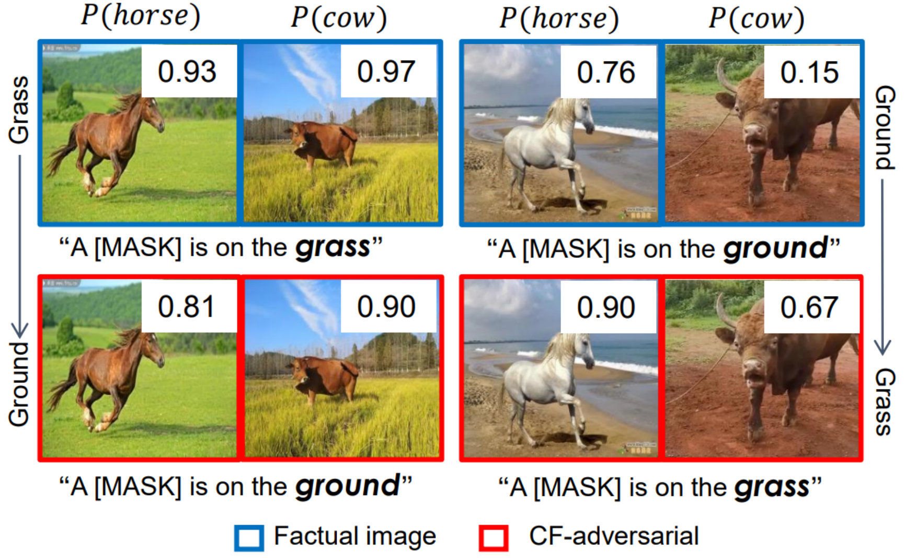

Counterfactually Measuring and Eliminating Social Bias in
Vision-Language Pre-training Models
概述
近几年来，视觉-语言预训练（Vision-Language Pre-training, VLP）模型发展十分迅速，多种跨模态下游任务通过对VLP 模型的微调取得了state-of-the-art的表现。在准确率之外，算法公平/算法中的社会偏见也是VLP模型的可信赖设计和部署中的关键议题[1]。然而，对于VLP模型中的社会偏见尚未有完善的研究。
在本工作中，我们针对VLP模型的多模态特性，基于反事实样本生成衡量了各个模态的社会偏见以及多模态融合的社会偏见。衡量预训练模型中的社会偏见本质上是衡量偏见概念（比如，性别等社会属性）和目标概念之间的相关性。VLP模型中信息的跨模态交互为偏见衡量提出了两个挑战。第一项挑战是如何在VLP模型中建模偏见概念和目标概念。受到Masked Language Modeling（MLM）预训练任务的启发，我们提出了prompt-based query去探测模型对偏见概念和目标概念的建模。如图1，要建模的概念在输入到VLP模型前就被屏蔽（替换为[MASK] token），MLM任务在[MASK] token位置上的预测结果P([MASK]=”shopping”)体现了VLP模型对输入图文对中[MASK]概念的建模。

图一 基于反事实的VLP模型偏见衡量
第二项挑战是量化偏见概念和目标概念之间的联系。 考虑到不同图文对之间存在较大差异，无法通过直接比较“偏见概念不同”的图文对中对“目标概念”MLM任务的预测概率来统计VLP模型中偏见概念和目标概念的联系（见第二章的具体讨论）。我们提出了基于反事实的偏见衡量方法CounterBias，如图一所示，对每个样本都生成偏见属性上的反事实样本（在图一中，将女性反事实修改为男性），之后使用反事实前后模型对目标属性的建模变化来衡量偏见概念和目标概念的联系。
由于目前还没有现成的数据集专门用于分析VLP模型中的社会偏见，我们提出了VL-Bias数据集，用于本工作以及社区对VLP模型中的社会偏见的理解。VL-Bias包含24K图文对，其中目标属性包含52个动作和13个职业。在VL-Bias数据集上，使用CounterBias，我们测试了两种典型的VLP结构，单流VLP和双流VLP。关键的观测结果包括：（1）测试的VLP模型中存在社会偏见，视觉模态和文本模态中都存在；（2）包含在VLP模型中的社会偏见与人类刻板影响基本一致；（3）测试的单流架构VLP和双流架构VLP在两个模态中的偏见表现出不同的一致性；（4）测试的VLP模型表现出比BERT更强的性别偏见。
继承了CounterBias中的反事实思路，我们提出了一个简单但有效的方法FiarVLP消除VLP模型中的社会偏见。具体来说，我们首先在视觉和语言模态中分别生成偏见概念的反事实样本。再将MLM任务对事实和反事实的预测的概率差异最小化，从而防止模型学习偏差和目标概念之间的关联。实验结果证明了FairVLP的有效性。
社会偏见的反事实衡量
MLM预训练任务已经被认识到是本质是最大化了[MASK] token和图文输入之间互信息[1]，这提供了我们基于[MASK] token的预测概率来探测模型对概念建模的理论基础。具体的说，我们为VLP模型的输入经过[MASK]的图文对，其中文本的目标概念被修改为[MASK] token，比如“the woman is shopping”被修改为“the woman is [MASK]”。之后将修改后的文本和图像一起输入到VLP模型。模型对[MASK] token的概率建模可以看作模型对目标概念的建模。
为了实现样本之间，除了偏见属性外，其他信息都完全一致，我们提出了对样本中的偏见概念进行反事实编辑，生成反事实样本。之后分别使用MLM任务去探测VLP模型对真实样本和反事实样本中目标属性的建模。
对于图像的反事实样本生成，我们使用了Model-specific adversarial attacks。同样利用MLM任务去建模模型对图像中偏见属性的建模，之后为图像施加微小的改动来修改模型对图像中偏见属性的建模。具体的说，我们创建了一个偏见属性提取模板，“a [MASK] is in the picture”,作为文本输入，让模型通过MLM任务重建[MASK]预测图像中的性别信息。相似于传统的对抗攻击[4][5]，我们使用介于P(B|V)和反事实偏见属性B‘之间的交叉熵损失，寻找对抗扰动来最小化此交叉熵。
对于文本模态的偏见信息修改，我们手动地替换文本输入中的偏见相关词汇，比如将“woman”替换为“man”。在衡量偏见之前，我们还注意到反事实样本中对偏见信息的改变并不是二值化的，而是连续的（比如P(B|V)是连续值）。我们在衡量偏见时，还需要考虑偏见信息的变化量。最后，VLP模型中社会偏见可以表示为单位偏见信息的变化带来VLP模型对目标属性的建模变化。
考虑到VLP的多模态特性，我们分别衡量了VLP模型的视觉模态偏见、文本模态偏见和多模态的共同偏见。

图二 CounterBias对三种偏见类型的衡量
偏见衡量结果
由于目前还没有现成的数据集专门用于分析VLP模型中的社会偏见，我们提出了VL-Bias数据集，用于本工作以及社区对VLP模型中的社会偏见的理解。VL-Bias包含24K图文对，其中目标属性包含52个动作和13个职业。
我们基于VL-Bias数据集衡量了单流VLP（ViLT[3]）和双流VLP（ALBEF[1]和TCL[2]）模型中包含的社会偏见。
基于CounterBias，我们调查了典型的VLP模型结构，得到的结论有以下三点：（1）VLP模型普遍存在社会偏见；（2）VLP模型中的性别偏见与人类的刻板印象基本一致；（3）单流和双流模型中两个模态方向的协调性不一致。
（1）VLP模型普遍存在社会偏见。下表总结了我们对三个VLP模型衡量得到的社会偏见，其中V表示视觉模态，L表示语言模态，V-L表示两模态的协作。可以看到：全部的三个模型都包括显著的性别偏见，以ALBEF再Activity中的多模态偏见为例，10.56%意味着修改输入中的性别信息，模型对Activity的预测将产生平均10.56%的变化。其次，视觉模态的性别偏见普遍比语言模态更为严重，我们猜测这是由于图像中提供了比文本更丰富的信息导致的。最后，我们还发现偏见衡量对于文本模板的选择敏感，使用多个模板得到的平均值（表二中的Avg）更具有普遍意义。

表一 VLP模型中包含的社会偏见（以性别为例）
（2）VLP模型中的性别偏见与人类的刻板印象基本一致。通过AMT调查了人类的刻板影响，并将人类刻板影响和VLP模型中表现出的社会偏见进行了对比，观察到VLP模型中的社会偏见与人类刻板影响基本一致。

图三 人类刻板印象（左）和VLP模型的社会偏见（右）
（3）单流和双流模型中两个模态方向的协调性不一致。 以VILT和ALBEF为例，我们发现ALBEF在两个模态上的偏见方向几乎一致，而VILT在两个模态上的偏见方法几乎是混淆的状态。我们分析原因如下：单流模型中没有使用跨模态的对齐，这导致了两个模型可能学习到了模态独有的偏见。而双流模型通过对齐模态，也潜在对齐了模态的偏见。
在论文中，我们还提供了更详细的衡量结果，请参阅我们的论文。
反事实偏见消除
我们继承了反事实衡量偏见的思路，提出了反事实消除社会偏见方法FairVLP。
具体地说，我们的消除分为两个模块：1.反事实样本生成 ，2。最小化真实样本和反事实样本间对目标概念建模的差距。
对于模块一，我们使用了上一节中所描述的对偏见概念的反事实样本生成。对于模块二，我们应用了Kullback-Leibler(KL)距离来衡量真实样本和反事实样本之间对目标概念建模的差距，并最小化KL距离。

图四 反事实数据增强消除VLP模型的社会偏见（FairVLP）
因为尚未有对VLP中社会偏见的消除方法，我们也将对单模态社会偏见消除的方法迁移到了VLP的偏见消除任务中。表二展示了我们方法和基线方法的去偏见效果，结果表明我们的方法取得了最显著的去偏见效果。

表二 对VLP模型的去偏见效果
讨论和总结
视觉语言训练的模型旨在解决特定下游任务的数据缺乏, 所以下游任务性能的关键是在预训练模型中学习可靠的跨模态知识。在揭示VLP模型中的社会偏见外，我们提出的CounterBias还可为VLP模型中知识的不透明表示提供了新的见解。 以ALBEF为例，我们可以使用CounterBias来发现VLP模型中所建模的动物概念(如马和牛)和背景概念(如草和地面)之间的相关性。如图八所示，事实和反事实的图文对之间的MLM预测差异反映了在ALBEF中学习到的动物和背景的相关性，表明模型学习了马与草、牛与草之间的虚假相关性。因此，CounterBias不仅仅可作为衡量社会偏见的工具，在对VLP模型的解释上也有用武之地。

图五 CounterBias可以发现社会偏见之外的虚假相关性
总结:本文提出通过比较真实样本和具有不同偏见概念的反事实样本在建模目标信息时候的差距来衡量VLP模型中的社会偏见。并且提出了VL-Bias数据集用于研究VLP模型中的社会偏见。以性别为例，我们发现VLP模型中普遍存在社会偏见。为了消除社会偏见，我们提出了FairVLP通过反事实数据增强来消除社会偏见。
Code and Dataset
|